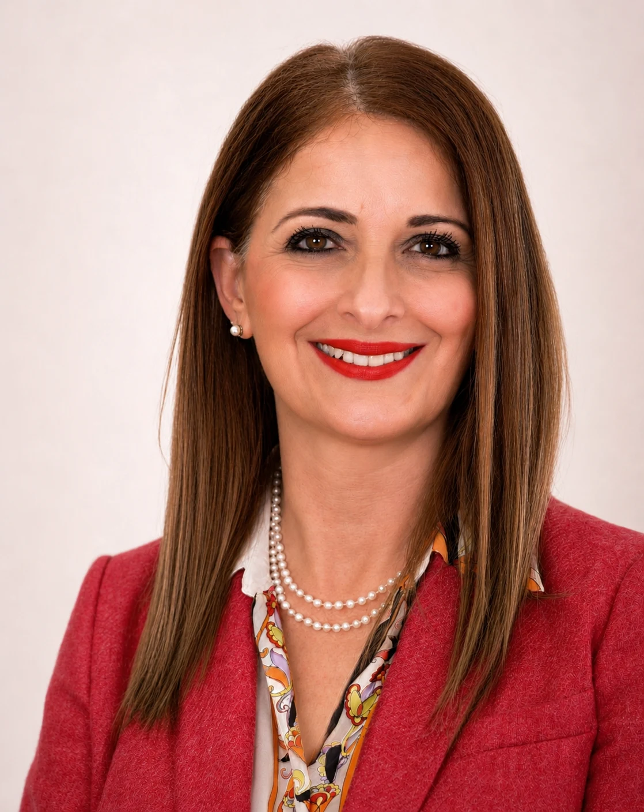

Co si odnesete do praxe
- Přehled indikací hydraulických cementů při zachování vitality dřeně a ošetření kořenových kanálků.
- Souvislosti mezi vlastnostmi biokeramických sealerů, obturační technikou a klinickým protokolem.
- Praktické poznatky o dyskoloracích a použití endodontických materiálů.
Přednáška je otevřena zubním lékařům, členům i nečlenům ČES.
O přednášce a lektorce
prof. Josette Camilleri

Hydraulické kalcium-silikátové materiály během posledních dvou desetiletí zásadně ovlivnily moderní endodoncii. Uplatňují se při zákrocích se zachováním vitality zubní dřeně, uzávěrech perforací, retrográdních výplních i při plnění kořenových kanálků. Současně však přinášejí řadu nových otázek týkajících se jejich vlastností, klinických protokolů, způsobu použití a dlouhodobé stability.Prof. Josette Camilleri patří mezi nejvýznamnější světové odborníky v oblasti dentálních biomateriálů. Je profesorkou endodoncie a aplikovaných materiálů na University of Birmingham a její výzkum významně přispěl k pochopení vlastností materiálu MTA, hydraulických cementů a biokeramických sealerů. Je autorkou více než 170 vědeckých publikací a editorkou několika odborných knih věnovaných endodontickým materiálům.
Přednáška nabídne aktuální přehled hydraulických cementů používaných v endodoncii a jejich klinických indikací. Zaměří se na jejich využití při zákrocích se zachováním vitality zubní dřeně a při plnění kořenových kanálků. Součástí budou také moderní obturační techniky, práce s biokeramickými sealery, problematika dyskolorací zubů a doporučené klinické protokoly pro dosažení předvídatelných výsledků.
V rámci přednášky se seznámíte s klasifikací hydraulických cementů, novými materiály na trhu a jejich účinností v jednotlivých indikacích. Diskutována bude také technika centrálního čepu, požadavky na klinické protokoly při použití biokeramických sealerů a praktické tipy pro každodenní klinickou praxi.
19. března 2027
Ústav molekulární genetiky AV ČR, Vídeňská 1083, 142 20 Praha 4
Přihlásit se na přednáškuProgram dne
|
8:15 - 9:00 |
Registrace účastníků |
|---|---|
|
9:00 - 10:30 |
prof. Josette Camilleri Od MTA k biokeramickým sealerům - část I. |
|
10:30 - 11:00 |
přestávka |
|
11:00 - 12:00 |
prof. Josette Camilleri Od MTA k biokeramickým sealerům - část II. |
| 12:00 - 13:30 |
oběd |
|
13:30 - 15:00 |
prof. Josette Camilleri Od MTA k biokeramickým sealerům - část III. |
| 15:00 - 15:30 |
přestávka |
|
15:30 - 17:00 |
prof. Josette Camilleri Od MTA k biokeramickým sealerům - část IV. |
Účastnické poplatky
| Zubní lékař | 7 000 Kč |
|---|---|
| Člen ČES | 5 000 Kč |
| Člen SES | 6 000 Kč |
Přednáška bude ohodnocena 5 kredity ČSK.
Přednáška bude v anglickém jazyce, k dispozici bude simultánní tlumočení.
Registrace na přednášku bude ukončena 18. 3. 2027. Storno poplatek je od 12. 3. 2027 včetně 100 % ceny přednášky.
Registrací souhlasíte s obchodními podmínkami a podmínkami ochrany a zpracování osobních údajů.
Všechny akce